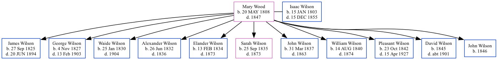

Mary Wilson (née Wood) 1808 - 1847
[ Home ] | [ Surnames Index ] | [ Family History ] was born in Whitley County, Ky on May 20, 1808 and married Isaac Wilson (with whom she had 11 children: James Love, George, Waide Hampton, Alexander, Elander M, Sarah Ann, John, William Perry, Pleasant H, David and John F) in Cumberland Gap, Kentucky, USA on Jul 12, 1824.
She died in 1847 in Miller Co., Mo.
Children
- James Love was born on Sep 27, 1825
- George was born on Nov 4, 1827
- Waide Hampton was born on Jan 25, 1830
- Alexander was born on Jun 26, 1832
- Elander M was born on Feb 13, 1834
- Sarah Ann was born on Sep 25, 1835
- John was born on Mar 31, 1837
- William Perry was born on Aug 14, 1840
- Pleasant H was born on Oct 23, 1842
- David was born in 1845
- John F was born in 1846
Family Tree
Data (GEDCOM) maintained by Jay Weston Hannah, Omaha, Nebraska, USA.
Website generated by ged2site. Last updated on Jun 18, 2024.